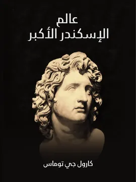

عالَم الإسكندر الأكبر

قراءة عربية أصلية محددة النطاق في الصفحات 11، 12 من ملف PDF المرتبط، وليست تلخيصا كاملا للكتاب. نناقش ما تدعمه هذه المقاطع فقط.
هوميروس والإسكندر
تفتتح المؤلفة مقدمتها، بترجمة خالد غريب علي: يوجد موضوعان استحوذا على اهتمام غير عادي منذ القدم وحتى يومنا هذا في عالم اليونان القديمة، وهما هوميروس والإسكندر الثالث المقدوني، ويجدر بنا أن نذكر وجه الصلة بينهما؛ إذ زعم الإسكندر أنه ينحدر من نسل آخيل، ويقال إنه كان ينام وفي متناول يده نسخة من الإلياذة، ومعها سيفه بالطبع. هذان الموضوعان مترابطان من وجه آخر يساعد على تفسير جاذبيتهما على مر العصور؛ إذ يطرح كلاهما تساؤلات جادة يبدو كثير منها بلا جواب نظرًا لطبيعة الشواهد التي وصلتنا. وربما تستحيل معرفة هوية هوميروس أو الإسكندر الحقيقية؛ إذ رأى بعضهم أن هوميروس لقب لا اسم شخص حقيقي، بمعنى أن هوميروس هو المغني الملحمي الأول الخيالي الذي تصوروه على رأس فرق الغناء الملحمي الإغريقية، ومن ثم كان هناك أكثر من هوميروس واحد جُمعت حكاياتهم في النهاية كقصيدة طويلة واحدة، لكن كثيرين غير مقتنعين بهذا الطرح، وهكذا يستمر الجدال.
زاوية وحدود القراءة
قراءة في مطلع المقدمة بترجمة خالد غريب علي (ص 11-12 من الملف)، ولا تدعي تغطية فصول الكتاب في عالم الإسكندر.
الطبعة والقراءة
هذا الكتاب صادر ومتاح مجانًا من مؤسسة هنداوي عبر صفحة الكتاب الرسمية وملفها المرتبط.
تنزيل PDF المجاني ↓ القراءة والمصدر الرسمي ↗